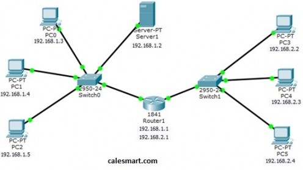
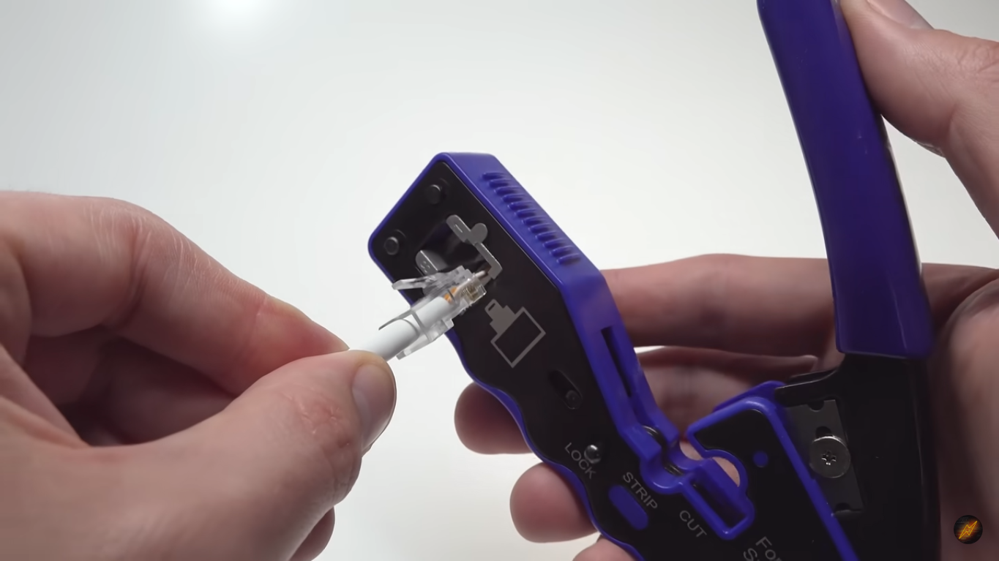

Daftar Keahlian
- Mengunakan konfig mikrotik mengunakan cisco packet trancer
- Mengkrimping sebuah kabel rj 45
- menginstanlasi ulang window
- mengubah alamat ip dan juga setting ip address




Keterangan Keahlian
Mengunakan Konfig mikrotik mengunakan cisco packet trancer
kita di sini cara kita membuat topologi dan cara kita mengantarkan data dengan nyata
Mengkrimping sebuah kabel rj 45
kita di sini mengcrimping kabel mengunakan alat crimping agar kita tau cara kabel itu udah benar atau benar
menginstanlasi ulang window
cara kita untuk menginstalasi windows dan juga cara mengrufus
mengubah alamat ip dan juga setting ip address
gimana cara kita untuk mengkonfigurasi alamat ip yang di tuju
EKRAKULIKULER
- Organisasi mpk majelis perawakilan kelas
- esport yang tertuju mengasa mainset